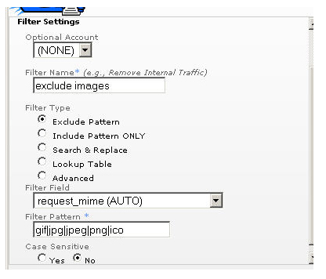

"排除/包含"过滤器
简介
"排除/包含过滤器"在管理界面中设置，应用于日志源或配置文件。在处理日志文件时，可用其过滤掉不想要的点击信息。对点击信息与字段中的数据进行匹配时，过滤器使用 POSIX 正则表达式。如果您对正则表达式不熟悉，请在继续之前参阅本部分的正则表达式概述文档。
Urchin 如何使用排除/包含过滤器
排除/包含过滤器在"搜索和替换"、"查找表格"和"高级"等过滤器之后应用。Urchin 会连续应用排除/包含过滤器。如果应用的过滤器是排除过滤器，并且模式匹配，则相应的点击信息将被忽略，Urchin 会继续处理下一条点击信息。如果模式不匹配，Urchin 会对点击信息应用下一个过滤器。这表示，您既可采用 '|' 分隔的多个模式创建一个排除过滤器，也可采用单个模式创建多个排除过滤器。
包含过滤器按照相反的逻辑应用。应用包含过滤器后，如果模式和数据不匹配，则点击信息将被忽略。如果应用多个包含过滤器，那么点击信息必须匹配所应用的每一个包含过滤器，该点击信息才能得到保存。要为指定的字段包含多个模式，请创建一个单独的包含过滤器，并在其中挨个列出所有表达式（由 '|' 分隔）。
使用排除/包含过滤器

在上图中，排除过滤器要求有过滤器表达式和过滤区域。在处理过程中，过滤器表达式将与过滤区域中的数据进行比较，如果过滤器匹配，则点击信息将被忽略。查看"过滤区域"文章，了解完整的可用字段列表。上例说明了如何通过滤出符合 gif、jpg、png、jpeg 和 ico 等 MIME 类型的图像来过滤图像点击信息。可自定义此列表以使其符合所有 MIME 类型。

在上图中，包含过滤器要求有过滤器表达式和过滤区域。在处理过程中，过滤器表达式将与过滤区域中的数据进行比较，如果过滤器不匹配，则点击信息将被忽略。查看 '过滤区域可提供哪些信息？' 文章，了解完整的可用字段列表。此例显示了如何通过限定请求的 mydir 子文件夹来仅包含部分点击信息。
控制项
通过 '区分大小写' 控制项，您可以指定在应用过滤器时是否区分大小写。